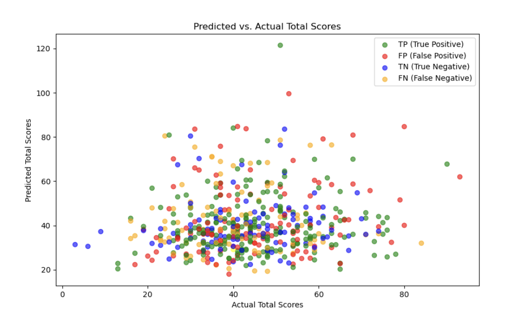

ML Midterm Checkpoint
Introduction/Background
In this project, we are utilising ML algorithms to predict the final score and ultimately the winner of NFL games. Our original problem definition involved predicting spreads and over/unders. However, due to the lack of historical spread data, we have narrowed our focus to being able to predict the outright winner of each game. Through our research into prior studies about the topic, we have identified two primary approaches to predicting NFL game outcomes. The first approach, used by popular sites like ABC’s FiveThirtyEight, utilizes an ELO rating system, which assigns a power rating to each team. According to FiveThirtyEight, “those ratings are then used to generate win probabilities for games, based on the difference in quality between two teams involved” [1]. The ELO ratings are subsequently updated after each game based on the result and how unexpected the outcome was. The second approach differs in that it uses statistics for each team leading up to the game in order to predict the outcome. This type of model relies on analyzing performance data, and it is what our group has chosen to pursue.
Literature Review
Our main literature review comes from the University of Michigan, where students used neural networks to predict the outcomes of college football games by running 5 different regression models. This study is trained on years of historical data on various team metrics and tested on live results. Their output shows that Lasso Regression was the most effective predictor; however, there is room for continuous improvement in this space, which we hope to capture by analyzing the NFL rather than NCAA play [2].
Dataset Description
The dataset we have chosen contains team data for each game of the NFL season from 2002-2023. Each row is an NFL game and each column is information about the game statistics such as location, scores, team stats, or time of possession. The dataset can be found here:
Dataset Link
NFL Team Stats DatasetProblem Definition
Problem/Motivation
It is currently difficult to predict the outcome of NFL games due to the complexity of the game and randomness involved. We aim to solve this problem by creating an ML model using pre-game statistics to predict the outcome of matchups. In this study we aim to reduce uncertainty in the field of sports forecasting and fill in the gaps of existing research in regards to predicting sports matchups. This study has practical and fiscal applications in the fields of sports forecasting, betting markets, and team strategy development.
Methods
Data Preprocessing Methods
Before we could begin implementing a machine learning model, we knew we would have to prepare our dataset by performing a significant amount of data preprocessing. Since we are building a predictive model, we needed the data in a format that reflects the information needed when predicting an NFL game.
The original Kaggle dataset contained statistics for individual games that were played between 2002-2023. This includes the time and location of each game, the two teams involved, the final scores, and numerous in-game statistics. However, what we needed was the statistics of each team leading up to the matchup and the final result of the game. To begin the data-preprocessing, we wrote a Python script that looped through the dataset, summing each team’s statistics for each category leading up to the game. The script then averaged these sums based on the number of games each team had played so far. We combined this information with the final scores from the game which created a new dataset that contained statistics for each team leading up to the game along with the final outcome.
With the data in a format which could be trained and tested on, we quickly realized that the dataset contained too many features for an effective model. We theorized that this was due to the high correlation between many of the features. For example the number of passing yards is highly correlated with the number of passing attempts, so including both of these features would be redundant. To mitigate these concerns, we ran principal component analysis (PCA) on our dataset to reduce the dimensionality. This allowed us to transform our dataset which initially contained 93+ features (many of which were highly correlated) into a new dataset which contained a set of 66 linearly uncorrelated features, called principal components. This allowed us to capture the maximum amount of variance in the data while reducing the dimensionality of the dataset.
After completing the previous steps, we now had a file containing the 66 most important features from our original dataset and we were almost ready to begin training the model. However, one more preprocessing technique was required to perform. Within the data, many features contained differing units, resulting in differing ranges of possible values. For example passing yards per game for a given team might typically range between 150-350 yards per game, while fumbles recovered per game could fall in the range of 0-3 turnovers per game. Without addressing this issue, the model would have issues evaluating the relative importance of these features, as it couldn’t distinguish that a team having 1 more turnover per game is much more significant than a team having 1 more passing yard per game.
To resolve this, we standardized each feature. From the original dataset, we had noticed that each feature roughly followed a bell curve, indicating each could be represented by a Guassian distribution. Knowing this, we standardized each feature so that it was represented by a Gaussian distribution with a mean of 0 and a standard deviation of 1. Each datapoint was transformed into a value representing how many standard deviations above or below that team was in terms of the average among the entire dataset. With the final step complete, the data was now ready to be fed into the model.
ML Algorithms
The first model that we chose to work on was a neural network, as we believed this machine learning model would be the best at dealing with the high levels of complexity involved with predicting NFL games. The neural network we used was a form of supervised learning because the model was trained with the true labels (actual final scores of games) as it was learning how to predict the games. Initially, we tried to create a single model to predict both home and away scores. However, after some testing, we found that it was more accurate when we used two different models, one to predict the away score and a different model to predict the home score. Both models were multi-layer neural networks built off the PyTorch library. Both models were created using 4 layers, where the first layer had an input size of 66 to represent the 66 features we were training on. At first, we were using fewer layers, but our testing found that adding layers would reduce the number of epochs until MSE convergence and also lowered the final MSE value.
We split the data into two sets: a training set and a testing set. We used the NFL seasons from 2002-2021 to train the model and used the data from the 2022 and 2023 seasons to test our results. We chose MSE as our loss function, as we believed it would best capture the changes in predicted scores and allow the model to get progressively closer to predicting the final scores.
We began by training the model using 1000 epochs, but soon found that this would cause the training loss to continually decrease only for the validation loss to spike at the end. We determined that this was due to our model overfitting, so we decided to reduce the number of epochs to 150. This proved to be the optimal number, as it prevented overfitting but also did not cause the model to be underfitted. After the model was trained and ready to be tested, we passed in the training set from earlier to see the results, which we will discuss below.
Results/Discussion
Since we had chosen mean squared error (MSE) as our loss function for the neural network, this was a good starting point to determine how well the model was performing. With the 150 epochs selected earlier, we can see this number allows the loss of the model to converge without allowing it to overfit.
For both the home team model and the away team model, the MSE loss converges to around 135. This means the model is off by an average of about 11.5 points between its predicted scores and the actual score that occurred. Although this loss seems very high at first, we actually believe that this is a strong result due to the random nature and high variance involved with NFL games. In our research, we found a study by University of Michigan students who used neural networks to predict NCAA college football games. Among the 8 different regression models that they attempted to use, none of them had an MSE value of less than 250 [2], which suggests that our model converging at around 135 is a solid starting point in terms of accuracy. The following graphs show the predicted values compared to the actual values for both the home and away teams, as well as the total score for a single game.
We can further see the performance of the model through the residual plot. The residual plot shows how far off the prediction is from the actual value as the predicted value changes.

The residual graph shows us that for the average predicted score (about 20 points), the residuals are well centered around a mean of 0. This means that the model is not overly biased and does not consistently under or over-predict the final scores. However, as the predicted values increase, we observe that the model begins to significantly overpredict the amount of points a team is going to score.
While the results and statistics shown previously are important, they are not the primary focus of this project. The goal of the project was to predict the winner of NFL games, so this is the metric that we are most concerned with. Specifically we are focused on how accurately the model predicts the winner of NFL games.
| Iteration | Model Win Accuracy % |
|---|---|
| 1 | 60.8% |
| 2 | 58.4% |
| 3 | 59.4% |
| 4 | 56.6% |
| 5 | 62.8% |
| Average | 59.6% |
After training the model on 5 separate occasions, we observed an average success rate of about 60% in predicting game outcome, with one version reaching an accuracy of nearly 63%.
The above graph shows a plot of games that were correctly predicted (in green) vs. games that were incorrectly predicted (in red). We note that there are not many trends relating the total score of a game with the model's ability of predicting the winner. We can also see a similar graph but this time with each datapoint categorized into one of four quadrants.
In the graph above we have grouped each point into one of four categories. True positives are games that the model predicted the home team would win and this outcome occurred. False positives are when the home team was predicted to win but the away team ended up winning. True negatives are cases where the model correctly predicted that the away team would win. Lastly, false negatives are instances where the model predicted the away team to win, but the home team ended up winning. Overall, we are very pleased with the results, as we achieved an accuracy of about 60% in predicting NFL games.
Next Steps
Our next steps are to continue to implement new models until we determine which has the greatest accuracy in predicting NFL game outcomes. The next model that we plan to implement is a random forest, which may have a better ability to predict NFL games than the neural network. We also intend to implement some form of gradient boost which could also have great predictive success.
Contribution Table
| Member | Contribution |
|---|---|
| Reuben Covey | Wrote a detailed section about what types of data-preprocessing methods we used in order to complete the model. Helped code and create the python files for the model. |
| Sebastian Stephens | Hosted the midterm report on Github pages as well as got all of the files ready to be submitted for the midterm. Updated Gantt Chart. Helped code and create the python files for the model. |
| Sofia Varmeziar | Expanded on the introduction and problem definition sections to get them ready for the midterm report. Reviewed and proofread report. Helped code and create the python files for the model. |
| Greyson McReynolds | Wrote a detailed section about what machine learning model we started using and what design decisions we made along the way and why. Helped code and create the python files for the model. |
| Sam Deckbar | Created python files which could run the model and created graphic visualizations to add to the midterm report to better visualize how the model was performing. Helped code and create the python files for the model. |
Gantt Chart
Gantt ChartReferences
[1] N. Silver, “How our NFL predictions work,” FiveThirtyEight, https://fivethirtyeight.com/methodology/how-our-nfl-predictions-work/ (accessed Nov. 7, 2024).
[2]L. Boll, “Gridiron Genius: Using Neural Networks to Predict College Football,” Umich.edu, 2023, doi: https://hdl.handle.net/2027.42/176935.